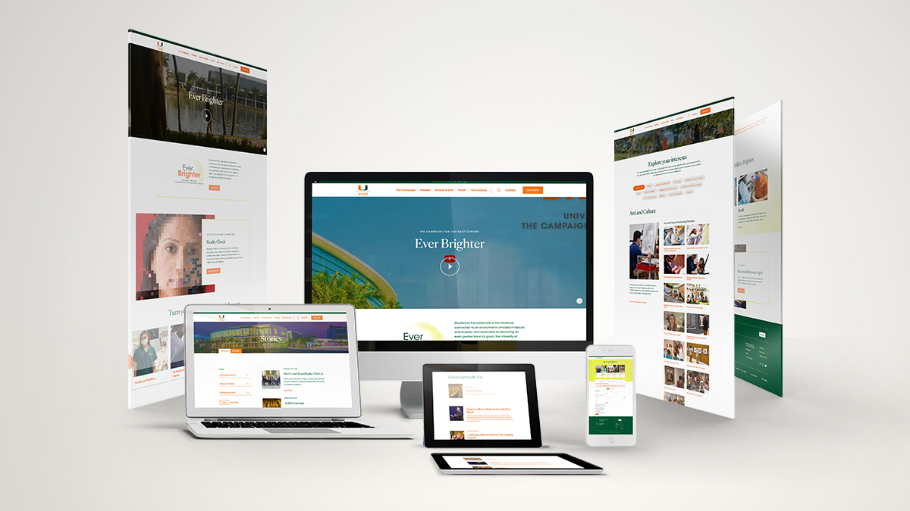
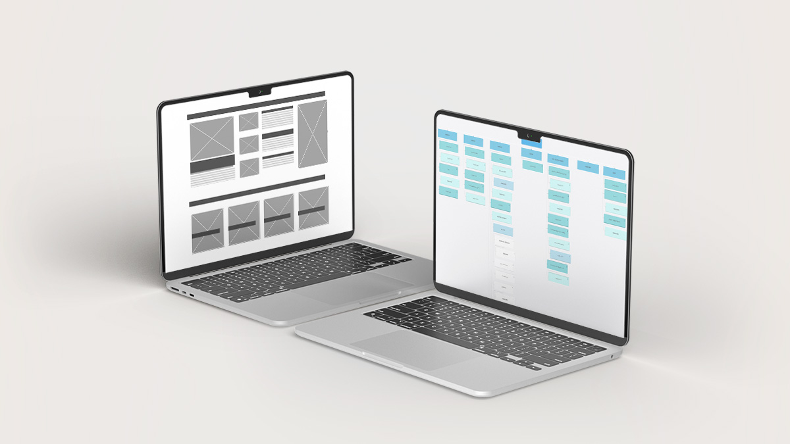
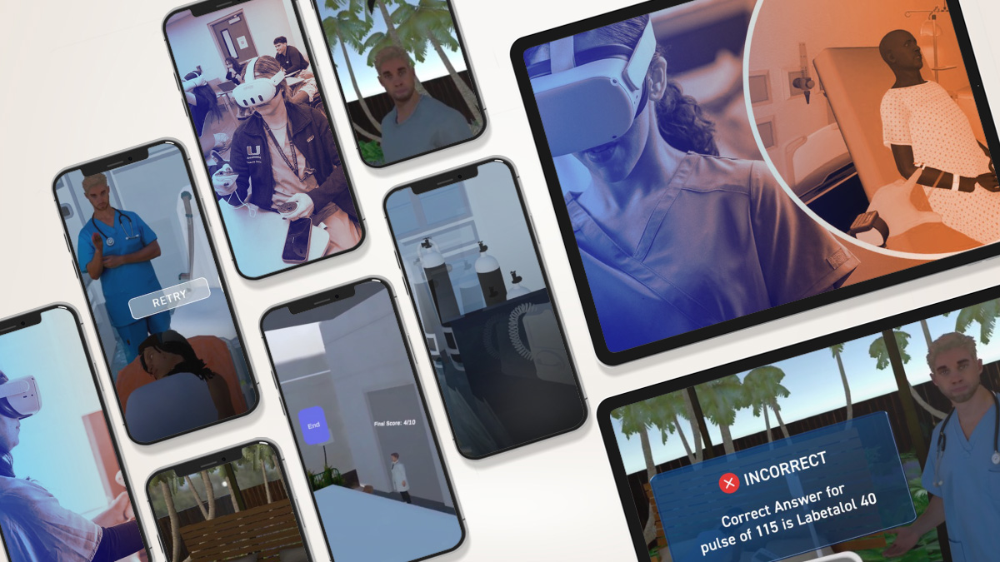
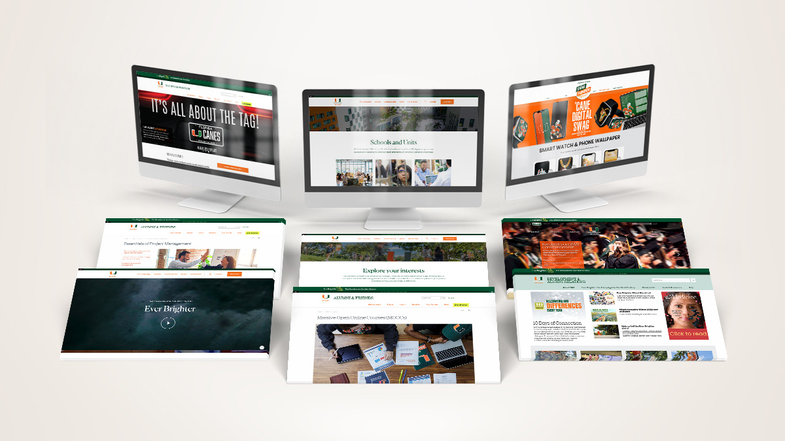
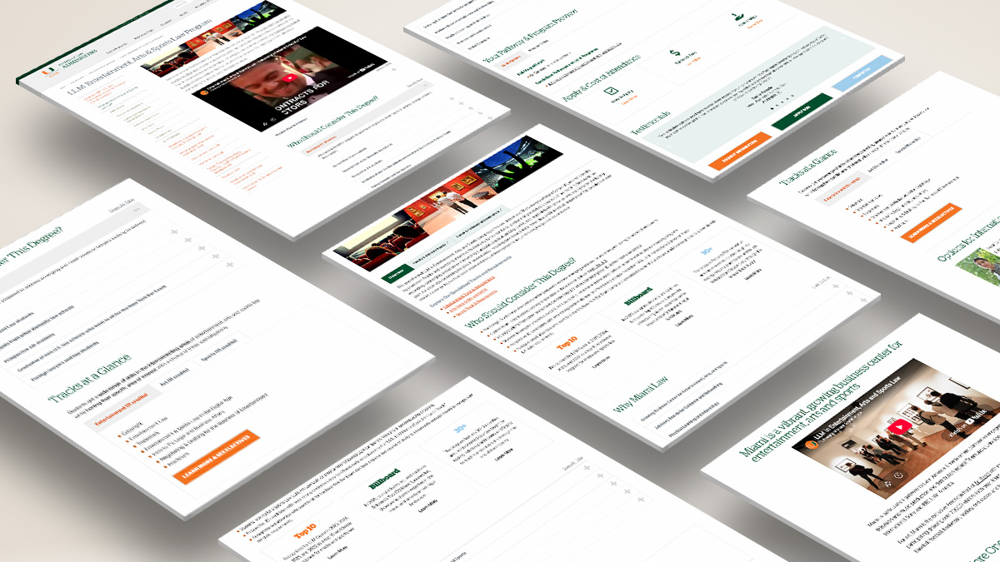
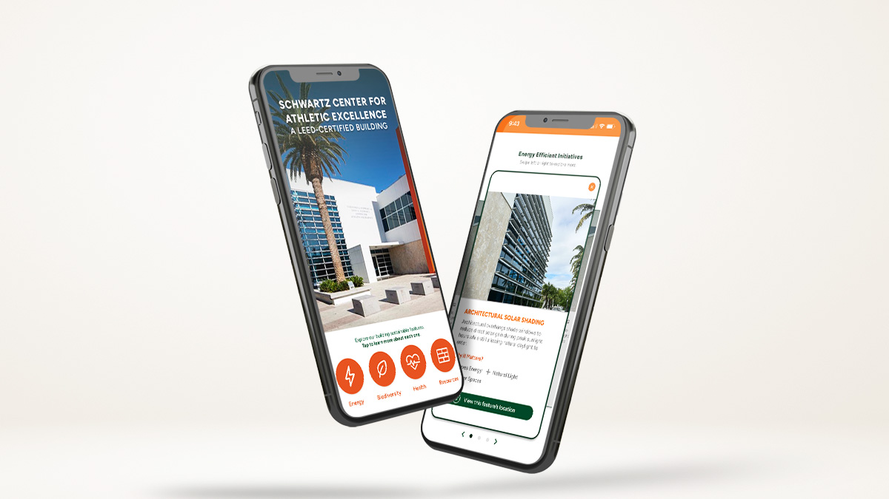

UX/UI Designer & Digital Strategist Turning Complexity Into Clarity
More About Me ProjectsAbout
K-drama and anime enthusiast, with a soft spot for bird watching and growing tomato plants. Wife and mom of two, endlessly curious about how people find their way through complicated systems, online and off.
I focus on the often unseen but essential side of digital experience: the information architecture, taxonomy, and content structure that help people find what they need quickly and intuitively. At the University of Miami, I've improved site health from 48 to 89, contributed to the information architecture supporting the $2.5B Ever Brighter Campaign, and am currently leading the consolidation of four web properties for the School of Law. Bilingual in English and Spanish.
Resume
I bring a decade of experience across digital strategy, design, and research, always striving to make things easier for people to navigate.
2024 – Present
2022 – 2024
2018 – 2022
2017 – 2018
2016 – 2017
2026
GPA 3.8. Centered on information architecture and digital design.
2024
2024
2018
GPA 3.8, Magna Cum Laude
Portfolio
Explore projects that span UX research, information architecture, and visual design.

UX research and information architecture for the digital presence of the University of Miami's $2.5B centennial campaign: stakeholder interviews, competitive benchmarking, and a content taxonomy built around three donor-interest themes.

Leading the consolidation of four Law School web properties into a single domain: content inventory, redirect mapping, and phased migration sequencing to preserve SEO authority and improve findability. In progress.

Led usability research for a real client's voice-based VR paramedic training simulation. Moderated testing using the System Usability Scale and VRNQ, resulting in 25 severity-rated issues and actionable design recommendations.

Restructured a single alumni site into a persona-driven IA with 4 audience journeys and an 8-category navigation, rebuilding page templates and URL structure in Cascade Server.

A full content and navigation restructure across 16 program pages, driving a 219% increase in sessions and a 74% engagement rate.

Competitive audit, benchmark research, personas, and low-fidelity wireframes for a sustainability-focused digital experience. XiD coursework.
Feel free to reach out if you'd like to discuss potential opportunities. I'd love to connect and explore how we can collaborate.